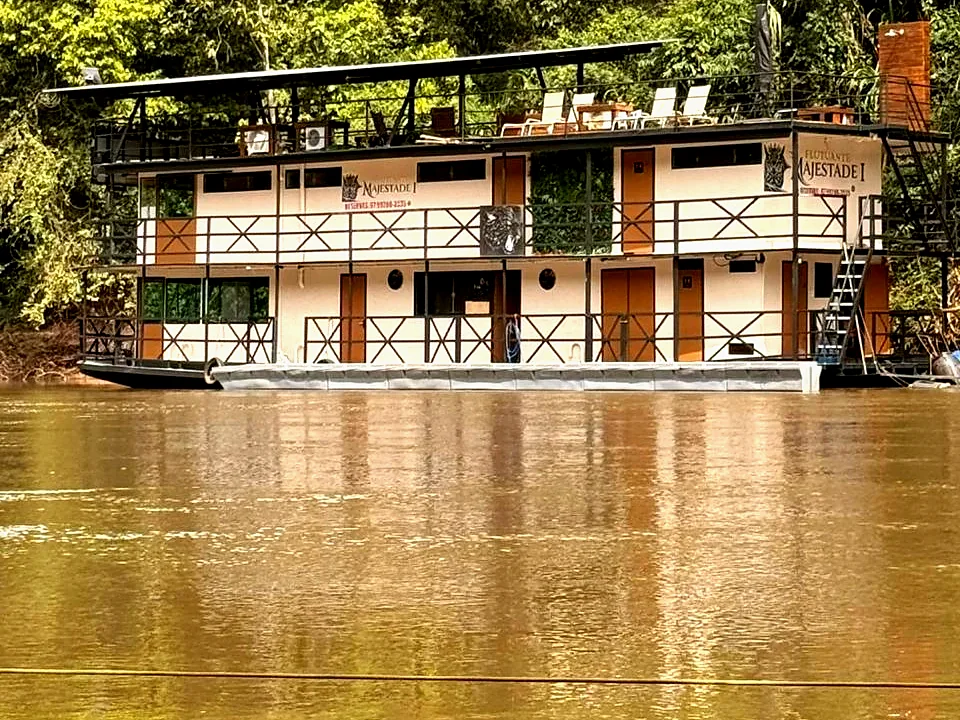

As embarcações do Majestade ficam no Pesqueiro Itaju, em Aquidauana, no Pantanal sul-mato-grossense. É de lá que você embarca para o flutuante.
Aquidauana fica a cerca de 140 km de Campo Grande. Na reserva, a gente manda a localização do pesqueiro e diz onde deixar o carro.
O trecho final é pela água. O horário do embarque se combina na hora da reserva.
